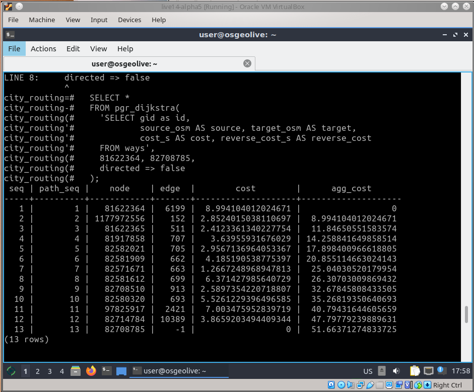

pgRouting¶
GIS eszközök¶
pgRouting kibővíti a PostGIS/PostgreSQL térinformatikai adatbázist, hogy útvonalkeresést és más hálózatelemző funkciókat biztosítson.
Az adatbázis alapú útvonalkeresés előnyei:
Az adatok és az attribútumok több klienssel módosíthatók, mint például QGIS és uDig továbbá JDBC, ODBC vagy Pl/pgSQL közvetlenül használatával. A kliensek PC-k vagy mobil eszközök lehetnek.
Az adatmódosítások azonnal megjelennek az úttervező motoron keresztül. Nincs szükség előkalkulációra.
A „költség” paramétert dinamikusan számíthatjuk az SQL-el és az értéke több mezőből vagy táblából jöhet.
pgRouting GPLv2+ licenc alatt érhető el és egy egyénekből, cégekből és szervezetekből álló növekvő közösség támogatja.


Alapfunkciók¶
pgRouting funkciókat biztosít ezekhez:
Minden pár legrövidebb útvonal * Johnson’s Algorithm * Floyd-Washall algoritmus
Legrövidebb útvonal * A* algoritmus * Dijkstra algoritmus
Kétirányú legrövidebb útvonal * A* algoritmus * Dijkstra algoritmus
Vezetési távolságok
K-legrövidebb útvonal * Yen’s algoritmus
Utazgató ügynök
És még továbbiak
Tudjon meg többet a pgRouting-ról a dokumentációból.
Részletek¶
Honlap: https://pgrouting.org/
Licenc: GNU General Public License (GPL) version 2
Szoftver verzió: 3.4.2
Támogatott platformok: Linux, Windows, Mac
API interfészek: SQL
Kereskedelmi támogatás: https://pgrouting.org/support.html